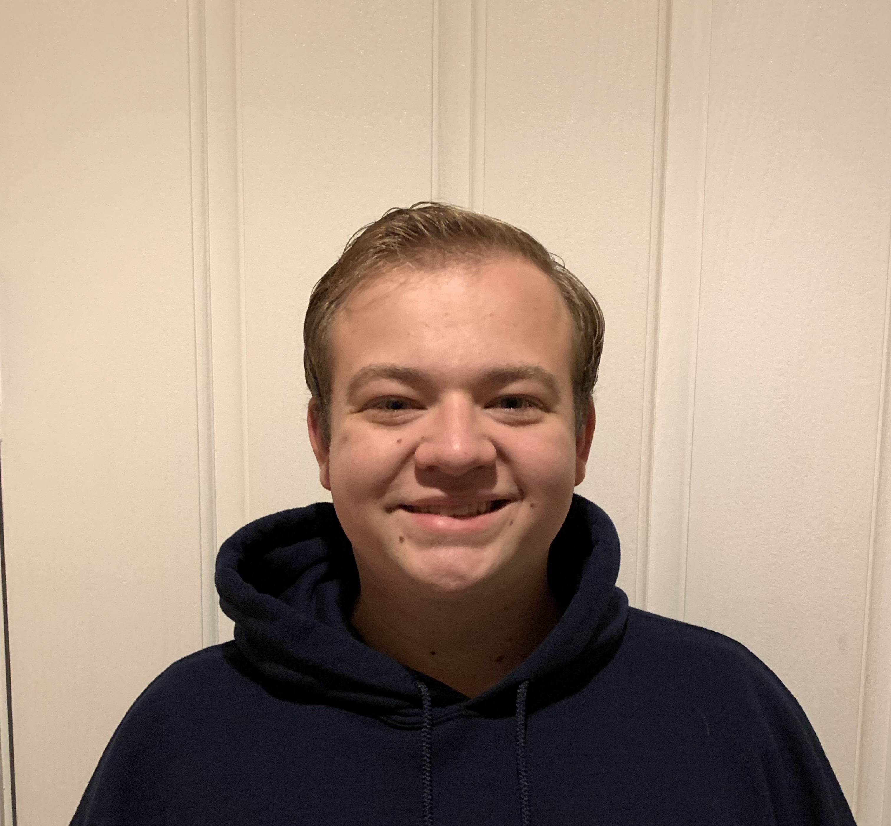

Getting to know me!

Parker Minchey
Hi everybody my name is Parker, and I don’t really have a nickname. I’m 22, single, and my major is computer science. I was born in Ogden, Utah and lived in Layton, Utah for 7 years. Then my dad’s job took us to Mission, Texas for about 4 years. Then my family and I moved to Brentwood, California which is a small city near Antioch.
I served a services mission from August 2019 to August 2021. I severed at the bishop store house two days a week, the salvation army two days of the week, and the temple one night a week. My favorite service was the temple. Then covid hit and the temple closed, and the salvation army stopped having volunteer come so I had to find a new place to serve. I eventually found white pony express and served there and the bishop store house for the rest of my mission.